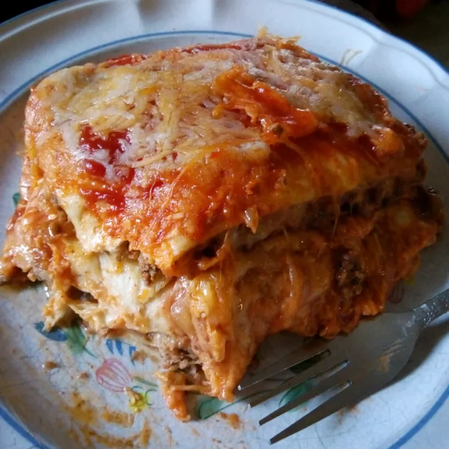

Home
Mexican Lasagna Recipe

From Allrecipes: "This is a traditional dish in my family.
Anyone can make it really. It is composed of traditional
Mexican ingredients layered over the top of one another in a lasagna-like
fashion (hence the name) but has little similarity to lasagna,
so lasagna haters have no fear!"
This dish looks pretty freakin good. Tortillas instead of pasta sounds like it's going to make both italians and latinos alike want to kill me, but it's sounds good so idk :P.
Ingredients
- 3/2 pounds ground beef
- 1/4 cup water
- 1 ounce taco seasoning
- 12 tortillas, more if needed
- 14 ounce refried beans
- 4 cups shredded cheese
- 8 ounces taco sauce
Directions
- Preheat over to 350 F, grease 9x13 inch dish
- Heat skillet over medium-high heat, stir in ground beef. Cook until beef is evenly browned; Should take about 10 minutes
- Arrange tortillas, spread fillings
- Bake until top layer begins to brown. Spread cheese over lasagna.
- Broil until cheese is melted and bubbling
- idk man try to eat it or something. maybe plant it outside, you'll have a lasagna tree in no time. Kenji Lopez-Alt taught me that.